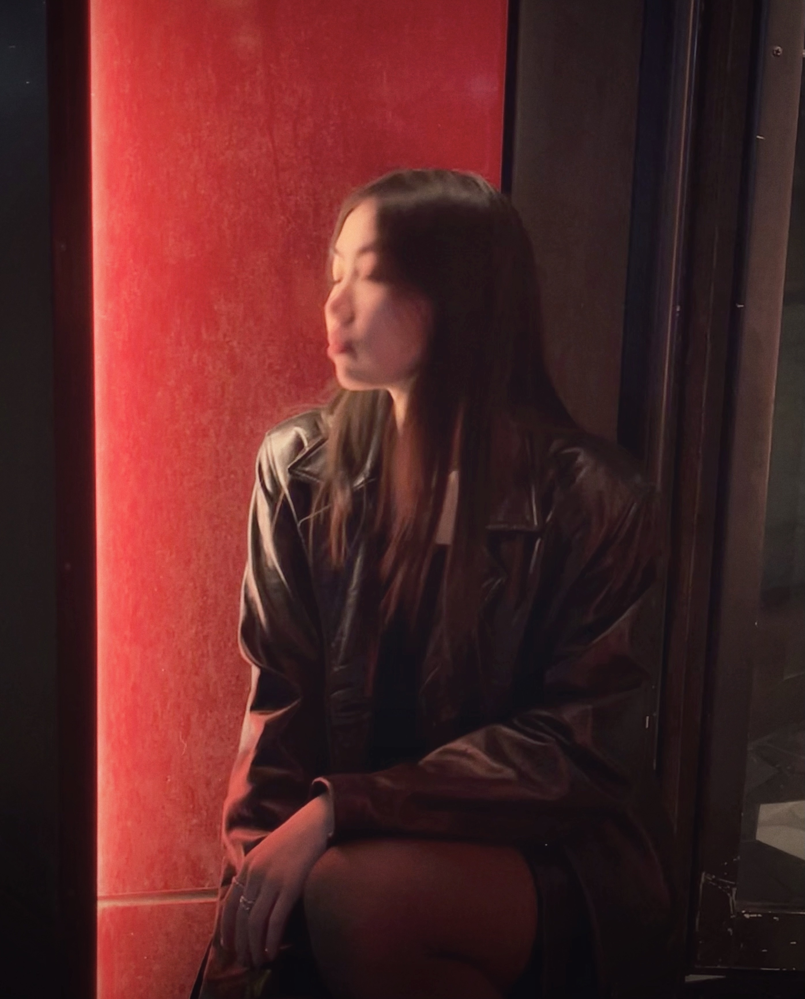
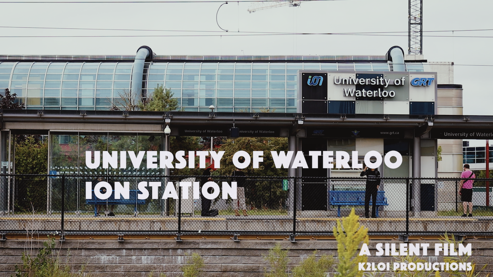
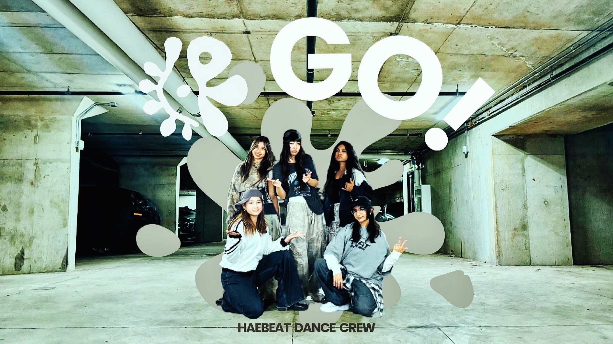
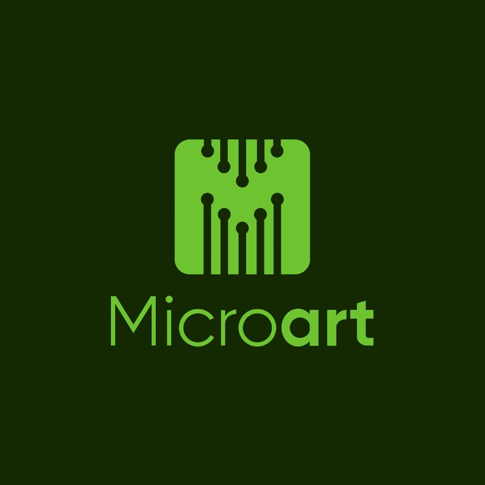
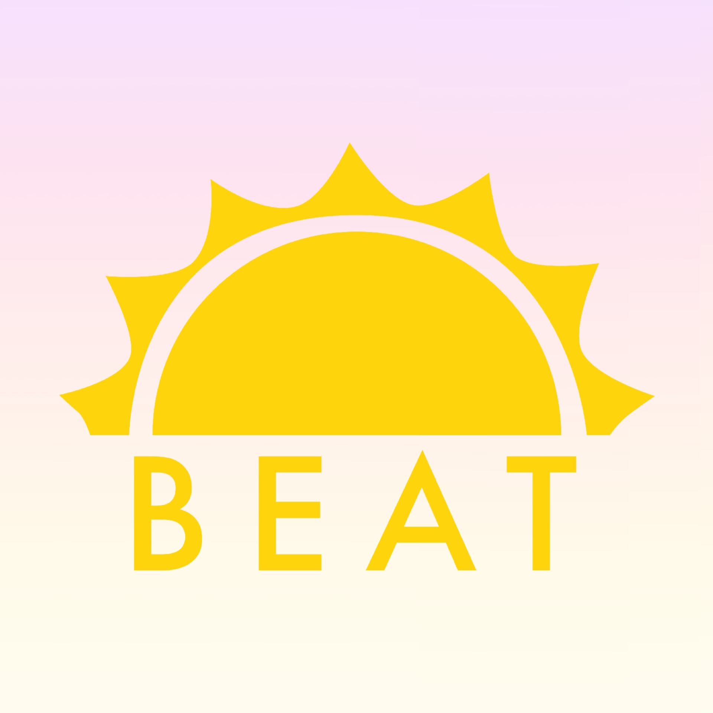
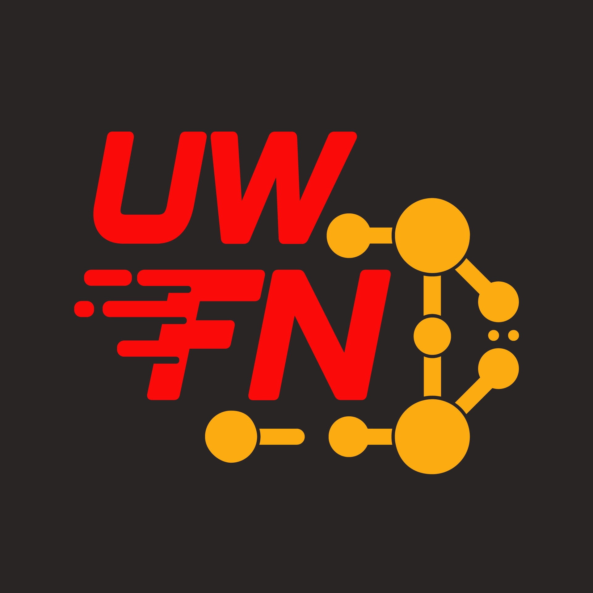
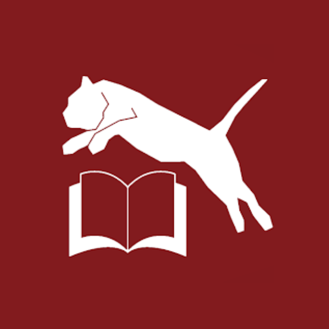
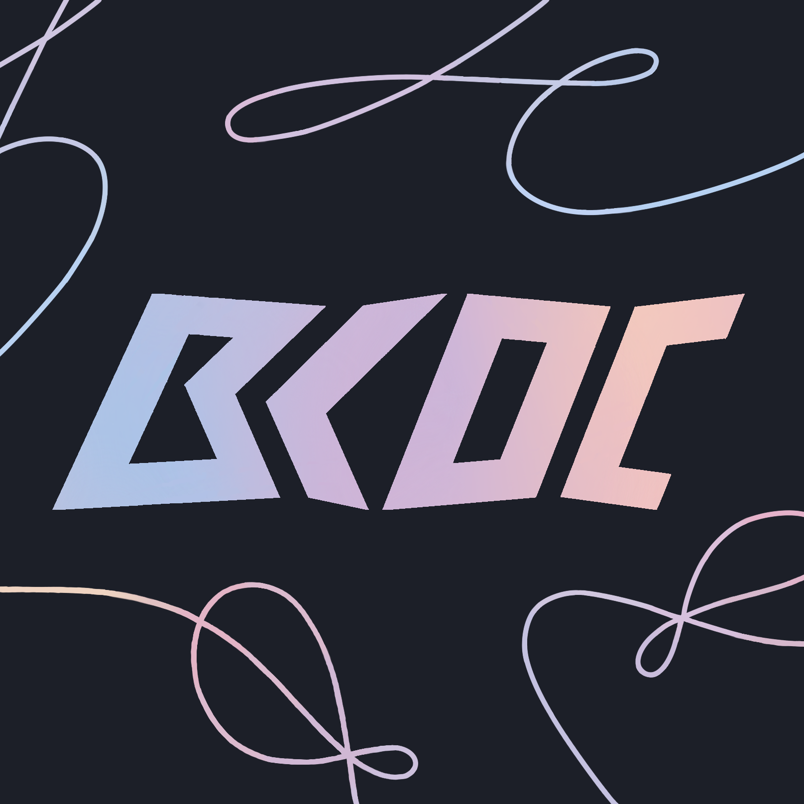
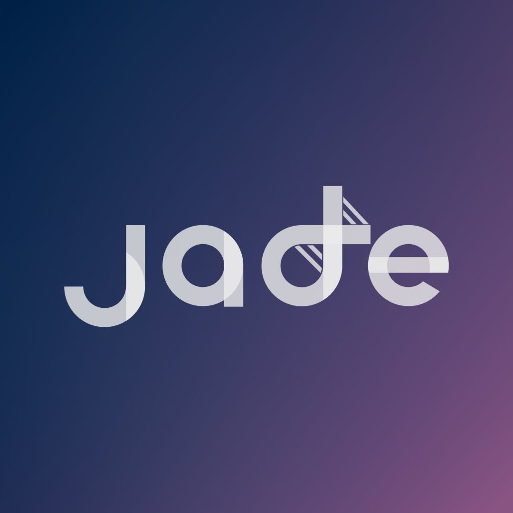

I'm Krysten — a Global Business & Digital Arts student exploring digital design, branding & creative media.
I bring ideas to life through video production, audio storytelling, graphic design, and bold branding that's built to inspire and leave a lasting impact.


The Quiet Game is a short documentary capturing the dedication and mindset of the Waterloo Women’s Basketball team. Rather than focusing solely on gameplay, the film highlights quieter moments — preparation, focus, and internal drive.
Capture the emotional and mental side of athletes, build a cohesive narrative through interviews, and deliver a polished final cut with strong visual and audio consistency.
Filmed across multiple sessions at the University of Waterloo's Physical Activities Complex, combining interviews and live practice footage. Post-production involved assembling a rough cut, refining pacing, colour grading, and balancing audio to create a cohesive and immersive final piece.

This short, silent film captures the daily rhythm of the University of Waterloo Station, a space defined by constant movement and quiet moments in between. The film explores how commuters, students, and transit intersect within a shared environment, revealing both energy and stillness throughout the day.
Document the station as both a functional transit hub and a social space, while experimenting with pacing, composition, and visual storytelling. The project aimed to convey time-of-day transitions through lighting, movement, and shot variation.
Filmed across multiple time periods — morning, midday, afternoon, and evening — to capture changing light and activity levels. The cinematography combined static compositions with controlled camera movement, including pans and gimbal tracking shots, to balance structure and flow. Editing focused on rhythm, sequencing, and visual continuity to create a cohesive, observational narrative without dialogue.

This dance cover video showcases a high-energy performance brought to life through dynamic editing, pacing, and visual storytelling.
Create a visually engaging dance film that emphasizes musicality, movement, and energy. The edit was designed to sync tightly with the beat while maintaining clarity and impact throughout each sequence.
The project involved directing performance shots, coordinating production, and leading post-production. Editing focused on timing cuts to music, refining transitions, and enhancing colour for visual cohesion. Final adjustments included pacing, visual effects, and overall polish to elevate the performance.
Video Editing • Graphic Design • Branding
Digital Marketing • Javascript • HTML • CSS
Figma • Illustrator • Photoshop • InDesign • After Effects
Premiere Pro • Audition • Da Vinci Resolve • Logic Pro
Visual Studio Code • GitHub • netnet.studio • Open edX

•

•

•

•

•

•
•
•
•
•
•
•